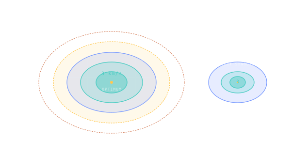

What is a Porkchop Plot?
A 2D heatmap showing ∆v cost across every (departure date, transit time) pair — the standard tool for finding launch windows.

101 · zoom in
When mission planners want to know if a trip to Mars is feasible, they don't compute one trajectory. They compute MILLIONS — every possible departure date, every possible transit time, in a giant grid — and they paint a heatmap. Cheap trajectories show up as cool blue zones, expensive ones as red. The result, weirdly, looks like a pork chop. The cheap zone is the meat of the chop; the expensive ridge is the bone.
Why bother with a whole heatmap instead of just one optimal answer? Because real missions have constraints. Maybe a particular launch pad is only available in 2026. Maybe you need to land before a dust storm season ends. Maybe a particular rocket is only ready by a certain month. The porkchop lets you see ALL the trade-offs at once — pick the cheap-enough trajectory that fits your real-world calendar.
Open /plan in this simulator. Pick a destination. Pick a launch year. The thing you're looking at is a porkchop, computed live. Each pixel is one Lambert problem — "leave Earth on day X, arrive on day Y, what does it cost?" Hover any pixel and the simulator tells you the exact dates and ∆v. Click and the trajectory loads into /fly. The next four sections explain how to read it.
Pick a departure date on the X axis. Pick a transit time on the Y axis. The colour of that cell tells you how much ∆v it would cost to fly that mission. Cool teal: cheap. Yellow: moderate. Red: very expensive. Repeat for every pixel and you get a porkchop plot — named for the way the cheap-zone contours form a pork-chop-shaped lobe.
Each cell is the answer to a Lambert problem: 'leave Earth on date X, arrive at the destination on date X + Y, what's the ∆v required?' Solve Lambert millions of times across a date grid and the contours emerge naturally. The natural minima are launch windows — the cheap zones where Hohmann-like transfers exist.
Orrery's `/plan` route shows you the porkchop for any of nine destinations (Mars, Mercury, Venus, the gas giants, Pluto, Ceres). Hover any cell to see the exact dates and ∆v. Click to load that mission into `/fly`.
SEE IN THE APP
- /plan The full porkchop plot is the centrepiece of /plan